| subject | chocolate | happiness |
|---|---|---|
| 1 | 1 | 1 |
| 2 | 2 | 2 |
| 3 | 2 | 2 |
| 4 | 4 | 4 |
| 5 | 3 | 3 |
| 6 | 4 | 4 |
| 7 | 7 | 5 |
| 8 | 7 | 4 |
| 9 | 7 | 9 |
| 10 | 7 | 6 |
3 Correlation
Correlation does not equal causation .*
– Every Statistics Instructor Ever
In the last chapter, we worked with data that felt overwhelming at first. We used plots and histograms to make the data visible, and descriptive statistics to summarize their central tendency and variability.
The reason we learned those tools is simple: we want to use data to answer questions. That theme runs through this course. As you read each section, keep asking yourself: how does this concept help me answer questions with data?
In Chapter 2, we imagined collecting self-reports of happiness from a group of people. The data were just numbers, but they already raised useful questions. How spread out are people’s happiness ratings? Do most people cluster near the middle, or are there groups of especially happy or unhappy individuals?
We also saw that numbers are imperfect reflections of experience. A rating from 0 to 100 is just one way of measuring happiness. It may not capture the full construct, but for now we will treat it as meaningful enough to work with.
This sets up the next step: moving from description to explanation. Rather than just asking how much happiness people report, we might ask what predicts differences in happiness? For example, does happiness vary with weather, income, or education? With social connections or cultural factors? Or with something lighter, like access to chocolate? Questions like these push us beyond describing data toward identifying relationships — the core of correlation analysis.
3.1 If something caused something else to change, what would that look like?
To use data for explanation, we need tools for recognizing when two things move together. Sometimes that reflects a real cause-and-effect relationship, and sometimes it doesn’t. The challenge is learning to tell the difference. In this chapter we’ll build intuition for what data look like when two variables are unrelated, when they move together, and when the pattern might mislead us.
3.1.1 More Chocolate = More Happiness?
Let’s imagine that a person’s supply of chocolate has a causal influence on their level of happiness. Let’s further imagine that the more chocolate you have the more happy you will be, and the less chocolate you have, the less happy you will be. Finally, because we suspect happiness is caused by lots of other things in a person’s life, we anticipate that the relationship between chocolate supply and happiness won’t be perfect. What do these assumptions mean for how the data should look?
Our first step is to collect some imaginary data from 100 people. We walk around and ask the first 100 people we meet to answer two questions:
- how much chocolate do you have? and
- how happy are you?
For convenience, both the scales will go from 0 to 100. For the chocolate scale, 0 means no chocolate, 100 means lifetime supply of chocolate. Any other number is somewhere in between. For the happiness scale, 0 means no happiness, 100 means all of the happiness, and in between means some amount in between.
Here is some sample data from the first 10 imaginary subjects.
We asked each subject two questions so there are two scores for each subject, one for their chocolate supply, and one for their level of happiness. You might already notice some relationships between amount of chocolate and level of happiness in the table. To make those relationships even more clear, let’s plot all of the data in a graph.
3.1.2 Scatter plots
When you have two measurements worth of data, you can always turn them into dots and plot them in a scatter plot. A scatter plot has a horizontal x-axis, and a vertical y-axis. You get to choose which measurement goes on which axis. Let’s put chocolate supply on the x-axis, and happiness level on the y-axis. Figure 3.1 shows 100 dots. Each dot is for one subject and represents both their happiness level and their chocolate supply.
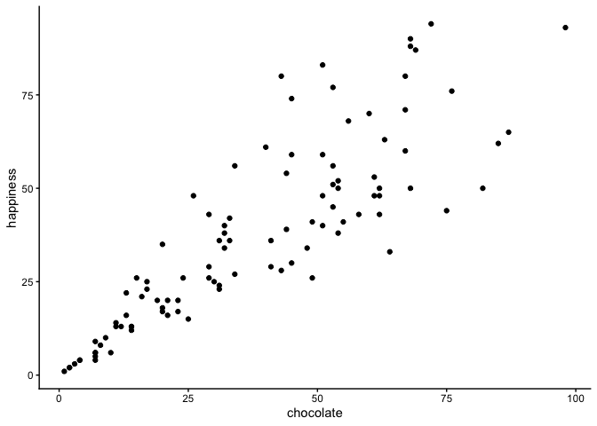
Each dot has two coordinates, an x-coordinate for chocolate, and a y-coordinate for happiness. Looking at the scatter plot, we can see that the dots show a pattern. People with less chocolate tend to report lower happiness, while those with more chocolate tend to report higher happiness. It looks like the more chocolate you have the happier you will be, and vice-versa. This kind of relationship is called a positive correlation.
3.1.3 Positive, Negative, and No-Correlation
Let’s imagine some more data. What do you imagine the scatter plot would look like if the relationship was reversed, and larger chocolate supplies decreased happiness? Or, what if there’s no relationship, and the amount of chocolate that you have doesn’t do anything to your happiness? take a look at Figure 3.2:
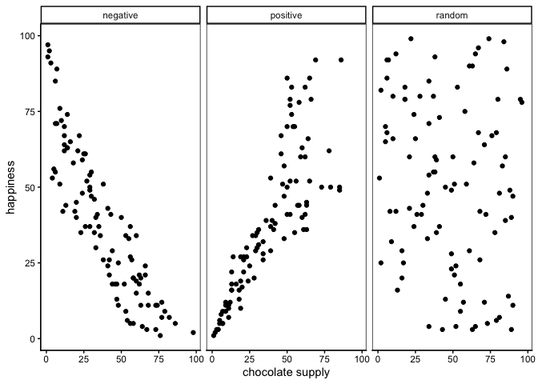
The first panel shows a negative correlation. Happiness goes down as chocolate supply increases. Negative correlation occurs when one thing goes up and the other thing goes down; or, when more of X is less of Y, and vice-versa. The second panel shows a positive correlation. Happiness goes up as chocolate as chocolate supply increases. Positive correlation occurs when both things go up together, and go down together: more of X is more of Y, and vice-versa. The third panel shows no correlation. Here, there doesn’t appear to be any obvious relationship between chocolate supply and happiness.
Note
Always plot first. If the scatter shows a U-shape or other curve, a single straight-line correlation will mislead. Fit a curved model (e.g., add a quadratic term) or transform variables instead of reporting r alone.
Zero correlation occurs when one thing is not related in any way to another things: changes in X do not relate to any changes in Y, and vice-versa.
You’ve examined your scatter plots, and now you might be wondering how to quantify what you see. We’ve already covered how to generate descriptive statistics for individual variables through means, standard deviations, etc. But what if you want to summarize how two variables move together in a single descriptive statistic? The path to that statistic (Pearson’s r) starts with understanding covariance.
3.2 Covariance
Let’s revisit variance. For one variable, variance summarizes how much values differ from their mean. Covariance extends this to two variables: it tells us whether being above the mean on \(X\) tends to come with being above the mean on \(Y\) (positive), below the mean on \(Y\) (negative), or neither (near zero).
In our chocolate–happiness example, the scatter plot suggested that higher chocolate tends to come with higher happiness. That means the deviations from each mean often have the same sign, so their products are mostly positive: evidence of positive covariance. Put simply, the two variables vary together.
Covariance is important because it underlies correlation, regression, and many other statistical tools. It can feel abstract at first. Keep the core idea in mind: look at how each variable’s deviations from its mean behave together. If both are above or below their means at the same time, the covariance is positive. If one is above while the other is below, it’s negative. If there’s no consistent pairing, the covariance is near zero. With practice, this way of thinking becomes intuitive.
Note
Covariance intuition. Think of a three-legged race. When partners move forward together, their steps align (positive covariance). When one moves forward as the other moves back, their steps oppose (negative covariance). If their steps are uncoordinated, there’s no consistent pattern (covariance near zero).
3.2.1 Turning the numbers into a measure of Covariance
If Covariance is just another word for correlation or relationship between two measures,then, we need some way to measure that. Consider our chocolate and happiness scores.
| subject | chocolate | happiness | Chocolate_X_Happiness |
|---|---|---|---|
| 1 | 1 | 1 | 1 |
| 2 | 2 | 2 | 4 |
| 3 | 2 | 2 | 4 |
| 4 | 4 | 4 | 16 |
| 5 | 3 | 3 | 9 |
| 6 | 4 | 4 | 16 |
| 7 | 7 | 5 | 35 |
| 8 | 7 | 4 | 28 |
| 9 | 7 | 9 | 63 |
| 10 | 7 | 6 | 42 |
| Sums | 44 | 40 | 218 |
| Means | 4.4 | 4 | 21.8 |
We’ve added a new column called Chocolate_X_Happiness, which is simply each person’s chocolate score multiplied by their happiness score. Why multiply? Because the products reveal how the two values move together.
- Small × small → small product
- Large × large → large product
- Small × large → product in between
Now extend this idea from pairs to the whole dataset. If chocolate and happiness rise together (both above average at the same time), the summed products will be large. If one tends to rise while the other falls, the summed products will shrink. This is the basic logic behind covariance.
Suppose we have two variables, \(X\) and \(Y\). If \(X\) and \(Y\) go up together (both small at the same time, both large at the same time), their products will also be large when summed across the dataset. If one goes up while the other goes down (large pairs with small), the summed products will be much smaller.
Here’s are two tables to illustrate:
| X | Y | XY |
|---|---|---|
| 1 | 1 | 1 |
| 2 | 2 | 4 |
| 3 | 3 | 9 |
| 4 | 4 | 16 |
| 5 | 5 | 25 |
| 6 | 6 | 36 |
| 7 | 7 | 49 |
| 8 | 8 | 64 |
| 9 | 9 | 81 |
| 10 | 10 | 100 |
| 55 | 55 | 385 |
| A | B | AB |
|---|---|---|
| 1 | 10 | 10 |
| 2 | 9 | 18 |
| 3 | 8 | 24 |
| 4 | 7 | 28 |
| 5 | 6 | 30 |
| 6 | 5 | 30 |
| 7 | 4 | 28 |
| 8 | 3 | 24 |
| 9 | 2 | 18 |
| 10 | 1 | 10 |
| 55 | 55 | 220 |
\(X\) and \(Y\) are perfectly aligned: \(1\) with \(1\), \(2\) with \(2\), up to \(10\) with \(10\). Their products add up to 385, the largest possible sum.
\(A\) and \(B\) are perfectly reversed: \(1\) with \(10\), \(2\) with \(9\), and so on. Their products add up to 220, the smallest possible sum.
Any other pairing of 1–10 with 1–10 will fall between these two extremes. Figure 3.3 shows the sums of products from 1000 random pairings. Every result falls between 220 (perfect negative alignment) and 385 (perfect positive alignment).
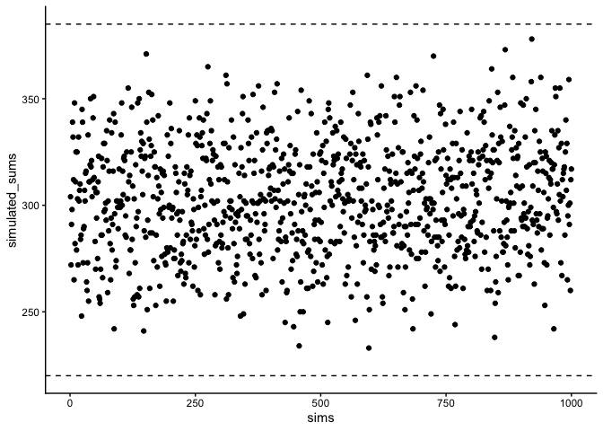
So what does this mean? The sum of the products tells us about the direction of the relationship:
- Close to 385 → strong positive relationship.
- Close to 220 → strong negative relationship.
- Near the middle → little or no relationship.
This is the foundation of covariance: products of paired values reveal whether two variables rise together, fall together, or move in opposite directions.
Takeaway:
- Positive correlation → large values in \(X\) pair with large values in \(Y\) → sum of products near the maximum.
- Negative correlation → large values in \(X\) pair with small values in \(Y\) → sum near the minimum.
- No correlation → pairings are random → sum lands in the middle.
3.2.2 Covariance, the measure
Earlier we saw that multiplying values from two variables can highlight how they vary together: large-with-large and small-with-small pairs push the product up, while mixed pairs keep it lower. That intuition is useful, but in statistics we define covariance more precisely.
Instead of multiplying raw values of \(X\) and \(Y\), we multiply their deviations from the mean. This centers each variable, so the product reflects how the two variables co-vary around their averages:
\(cov(X,Y) = \frac{\sum_{i}^{n}(x_{i}-\bar{X})(y_{i}-\bar{Y})}{N}\)
In practice, the steps are straightforward: subtract the mean of \(X\) from each \(x_i\), subtract the mean of \(Y\) from each \(y_i\), multiply the deviations, and then average those products. A positive covariance means the two variables tend to move together (above or below their means at the same time). A negative covariance means they move in opposite directions. A covariance near zero suggests no consistent relationship.
The following table shows this process:
| subject | chocolate | happiness | C_d | H_d | Cd_x_Hd |
|---|---|---|---|---|---|
| 1 | 1 | 1 | -3.4 | -3 | 10.2 |
| 2 | 2 | 2 | -2.4 | -2 | 4.8 |
| 3 | 2 | 2 | -2.4 | -2 | 4.8 |
| 4 | 4 | 4 | -0.4 | 0 | 0 |
| 5 | 3 | 3 | -1.4 | -1 | 1.4 |
| 6 | 4 | 4 | -0.4 | 0 | 0 |
| 7 | 7 | 5 | 2.6 | 1 | 2.6 |
| 8 | 7 | 4 | 2.6 | 0 | 0 |
| 9 | 7 | 9 | 2.6 | 5 | 13 |
| 10 | 7 | 6 | 2.6 | 2 | 5.2 |
| Sums | 44 | 40 | 0 | 0 | 42 |
| Means | 4.4 | 4 | 0 | 0 | 4.2 |
Deviations from the mean for chocolate (column C_d), deviations from the mean for happiness (column H_d), and their products. The mean of those products (in the bottom right corner of the table) is the official covariance.
Covariance is a powerful idea, but it has a major drawback: its magnitude is hard to interpret. Just as variance is tied to squared units, covariance is tied to the scales of both variables. Is our covariance of 3.22 large? What if it’s 100? The raw number doesn’t tell us. All we can tell is its sign (positive or negative), not its size, which means we can’t say how strong the correlation is. To compare strength across variables with different units or scales, we need to normalize covariance, which leads to Pearson’s \(r\).
3.2.3 Pearson’s r
We often want a relationship measure that is directional, unitless, and bounded. Pearson’s \(r\) does exactly this by rescaling covariance to lie between \(-1\) and \(1\):
- \(r=1\): perfect positive linear relationship
- \(r=0\): no linear relationship
- \(r=-1\): perfect negative linear relationship
Values closer to \(\pm1\) indicate stronger linear association; values near \(0\) indicate weak or no linear association.
Let’s take a look at a formula for Pearson’s \(r\):
\(r = \frac{cov(X,Y)}{\sigma_{X}\sigma_{Y}} = \frac{cov(X,Y)}{SD_{X}SD_{Y}}\)
In this forumal we see the symbol \(\sigma\), which indicates the standard deviation (SD). In words, \(r\) is the Covariance of X and Y divided by the product of their standard deviations. Dividing by the standard deviations normalizes the Covariance, constraining \(r\) to fall between between -1 to 1. This makes correlation values comparable across variables measured in different units or on different scales.
Note
Computing r. You’ll see algebraically equivalent formulas for Pearson’s r. They produce the same result; we’ll typically rely on software and focus on interpretation.
There are several equivalent formulas for computing Pearson’s \(r\). Some are written to simplify hand calculations, others are more compact algebraically. They all yield the same result. Since we rely on software for calculations, our focus will be on what \(r\) means and how to interpret it, rather than practicing manual computation. You’ll see how to run the calculation in R during lab.
Does Pearson’s \(r\) really stay between -1 and 1 no matter what? It’s true, take a look at the following simulation. Here I randomly ordered the numbers 1 to 10 for an X measure, and did the same for a Y measure. Then, I computed Pearson’s \(r\), and repeated this process 1000 times. As you can see from Figure 3.4 all of the dots are between -1 and 1.
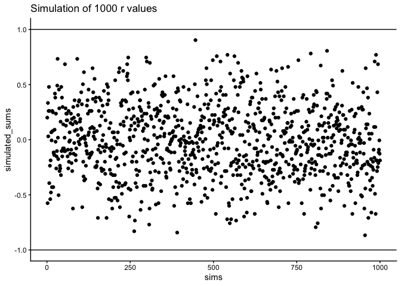
3.3 Regression: A mini intro
We’re going to spend the next little bit adding one more thing to our understanding of correlation. It’s called linear regression. Just an introduction to the basic concepts.
First, let’s look at a linear regression. This way we can see what we’re trying to learn about. Figure 3.5 shows the same scatter plots as before with something new: lines!
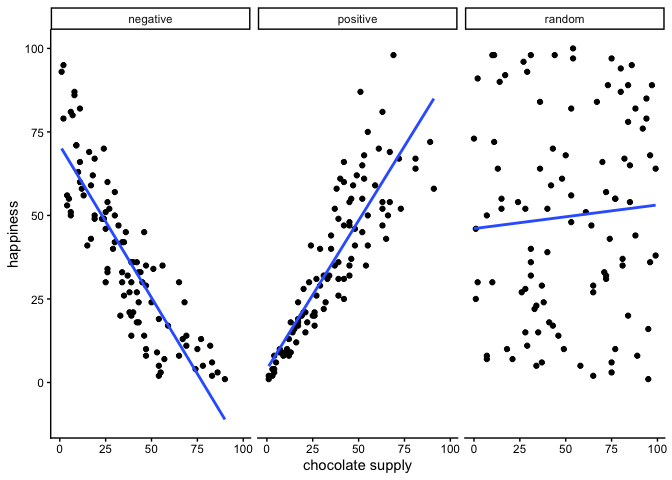
3.3.1 The best fit line
Notice the blue lines in these panels. Each is a best fit line: the single straight line that best summarizes the overall pattern of dots.
With one variable, we use hte mean to describe central tendency in one dimension. With two variables plotted together, we need a two-dimensional equivalent. A line serves that purpose, capturing the average relationship across the could of points.
Of course, many possible lines could be drawn. Most would miss the pattern. The useful lines would go through the data following the general shape of the dots. Which one is the best? How can we find out, and what do we mean by that? In short, the best fit line is the one that has the least error.
Check out this plot: a line runs through the dots, and short vertical lines drop from each dot to the line. These are residuals:the vertical differences between the observed data and the fitted line. Residuals show the error, or how far off the line’s prediction is for each point. Since not all dots fall exactly on the line, some error is inevitable. The best-fit line is the one that minimizes these errors overall.
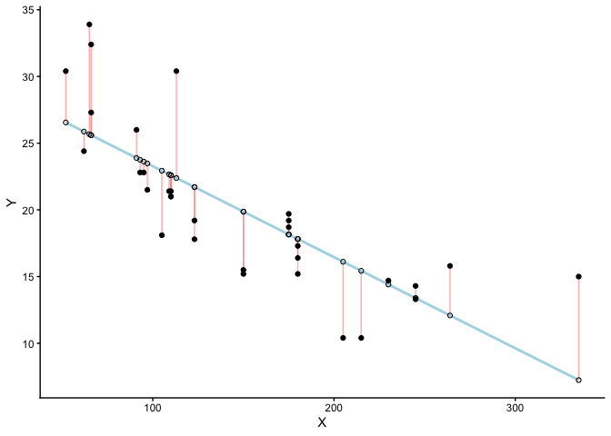
There’s a lot going on in Figure 3.6. his is a scatter plot of two variables \(X\) and \(Y\). Each black dot represents the observed data. The blue line is the regression line, and the white dots show the predicted values from that line. The red lines are residuals: they drop vertically from each observed value to its predicted value on the line. Because most of the black dots are not exactly on the line, each residual shows how far the prediction differs from the observed value.
The key point is that the regression line is chosen to minimize the total size of these residuals. In practice, we compute the sum of squared deviations: squaring each residual, then adding them together. The blue line is the one that produces the smallest possible total squared error. Any other line would yield a larger total error.
Figure 3.7 is an animation to see this in action. The animations compares the best fit line in blue, to some other possible lines in black. The black line moves up and down. The red lines show the error between the black line and the data points. As the black line moves toward the best fit line, the total error, depicted visually by the grey area shrinks to its minimum value. The total error expands as the black line moves away from the best fit line.

Whenever the black line does not overlap with the blue line, it fits the data less well. The blue regression line is the one that minimizes the overall error — not too high, not too low, but the line with the least total deviation.
Figure 3.8 shows how the sum of squared deviations (the sum of the squared lengths of the red lines) behaves as we move the line up and down. What’s going on here is that we are computing a measure of the total error as the black line moves through the best fit line. This represents the sum of the squared deviations. In other words, we square the length of each red line from the above animation, then we add up all of the squared red lines, and get the total error (the total sum of the squared deviations). The graph below shows what the total error looks like as the black line approaches then moves away from the best fit line. Notice, the dots in this graph start high on the left side, then they swoop down to a minimum at the bottom middle of the graph. When they reach their minimum point, we have found a line that minimizes the total error. This is the best fit regression line.
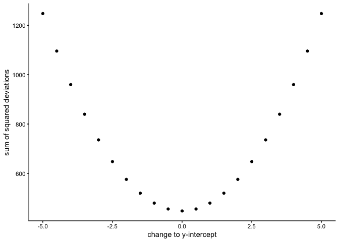
OK, so we haven’t talked about the y-intercept yet. But, what this graph shows us is how the total error behaves as we move the line up and down. The y-intercept here is the thing we change that makes our line move up and down. As you can see the dots go up when we move the line down from 0 to -5, and the dots go up when we move the line up from 0 to +5. The best line, that minimizes the error occurs right in the middle, when we don’t move the blue regression line at all.
3.3.2 Computing the best fit line
How do we find the line that minimizes the sum of squared deviations? In principle, you could try many possible lines and compare their errors, but that’s not efficient. Instead, we use formulas (or, more realistically, software) to identify the line with the smallest total error.
Next we’ll look at the formulas for calculating the slope and intercept of a regression line, and work through one example by hand. Many statistical formulas were designed to simplify hand calculations before computers were common. Today we rely on software, but working through examples by hand helps illustrate the logic behind the formulas.
Here are two formulas we can use to calculate the slope and the intercept, straight from the data. We won’t go into why these formulas do what they do. These ones are for “easy” calculation.
\(intercept = b = \frac{\sum{y}\sum{x^2}-\sum{x}\sum{xy}}{n\sum{x^2}-(\sum{x})^2}\)
\(slope = m = \frac{n\sum{xy}-\sum{x}\sum{y}}{n\sum{x^2}-(\sum{x})^2}\)
In these formulas, the \(x\) and the \(y\) refer to the individual scores. Here’s a table showing you how everything fits together.
| scores | x | y | x_squared | y_squared | xy |
|---|---|---|---|---|---|
| 1 | 1 | 2 | 1 | 4 | 2 |
| 2 | 4 | 5 | 16 | 25 | 20 |
| 3 | 3 | 1 | 9 | 1 | 3 |
| 4 | 6 | 8 | 36 | 64 | 48 |
| 5 | 5 | 6 | 25 | 36 | 30 |
| 6 | 7 | 8 | 49 | 64 | 56 |
| 7 | 8 | 9 | 64 | 81 | 72 |
| Sums | 34 | 39 | 200 | 275 | 231 |
We see 7 sets of scores for the x and y variable. We calculated \(x^2\) by squaring each value of x, and putting it in a column. We calculated \(y^2\) by squaring each value of y, and putting it in a column. Then we calculated \(xy\), by multiplying each \(x\) score with each \(y\) score, and put that in a column. Then we added all the columns up, and put the sums at the bottom. These are all the number we need for the formulas to find the best fit line. Here’s what the formulas look like when we put numbers in them:
\(intercept = b = \frac{\sum{y}\sum{x^2}-\sum{x}\sum{xy}}{n\sum{x^2}-(\sum{x})^2} = \frac{39 * 200 - 34*231}{7*200-34^2} = -.221\)
\(slope = m = \frac{n\sum{xy}-\sum{x}\sum{y}}{n\sum{x^2}-(\sum{x})^2} = \frac{7*231-34*39}{7*275-34^2} = 1.19\)
Great, now we can check our work, let’s plot the scores in a scatter plot and draw a line through it with slope = 1.19, and a y-intercept of -.221. As shown in Figure 3.9, the line should go through the middle of the dots.
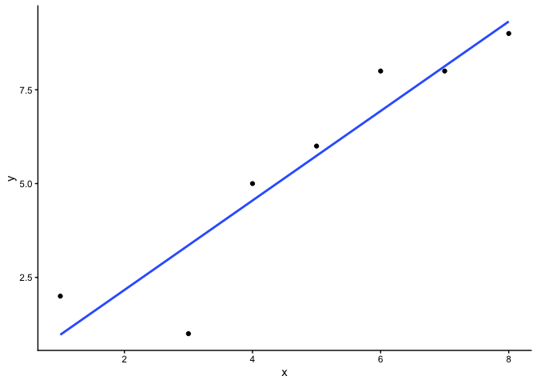
3.4 Interpreting Correlations: why caution is warranted
You’ve heard the warning: correlation does not equal causation. But what does a correlation really tell us, and what can it mislead us about? Interpreting correlations requires care, because the same number can arise from very different situations: random chance, confounding influences, or nonlinear patterns. In this section, we’ll look at why correlations can be unreliable and how to recognize their limits.
3.4.1 Spurious correlation: chance alone can look convincing
Another very important aspect of correlations is the fact that they can be produced by random chance. This means that you can find a positive or negative correlation between two measures, even when they have absolutely nothing to do with one another. You might have hoped to find zero correlation when two measures are totally unrelated to each other. Although this certainly happens, unrelated measures can accidentally produce spurious correlations, just by chance alone.
Let’s demonstrate how correlations can appear by chance when there is no causal connection between two measures. Imagine two independent participants, one at the North Pole and one at the South Pole. Each has a lottery machine containing balls numbered 1 through 10. With replacement, each participant randomly draws 10 balls and records the numbers. Because the draws occur independently and half a world apart, there is no possible causal link between the two sets of numbers. The outcomes are determined by chance alone.
Here is what the numbers on each ball could look like for each participant:
| Ball | North_pole | South_pole |
|---|---|---|
| 1 | 2 | 10 |
| 2 | 3 | 1 |
| 3 | 7 | 3 |
| 4 | 6 | 6 |
| 5 | 5 | 6 |
| 6 | 6 | 5 |
| 7 | 3 | 10 |
| 8 | 8 | 6 |
| 9 | 8 | 9 |
| 10 | 7 | 7 |
In this one case, if we computed Pearson’s \(r\), we would find that \(r =\) -0.1318786. But, we already know that this value does not tell us anything about the relationship between the balls chosen in the north and south pole. We know that relationship should be completely random, because that is how we set up the game.
The better question here is to ask what can random chance do? For example, if we ran our game over and over again thousands of times, each time choosing new balls, and each time computing the correlation, what would we find?First, we will find fluctuation. The r value will sometimes be positive, sometimes be negative, sometimes be big and sometimes be small. Second, we will see what the fluctuation looks like. This will give us a window into the kinds of correlations that chance alone can produce. Let’s see what happens.
3.4.1.1 Monte-carlo: what chance produces
We can use a computer to repeat the lottery game as many times as we like. This process, repeated random sampling to explore possible outcomes, is called a Monte Carlo simulation.
I’ve coded a loop to run the game 1,000 times. Each time, both the North Pole and South Pole participants generate 10 random numbers. We then compute the correlation between their two sets. The result is 1,000 different values of Pearson’s \(r\), each produced under conditions where we know no real relationship exists.
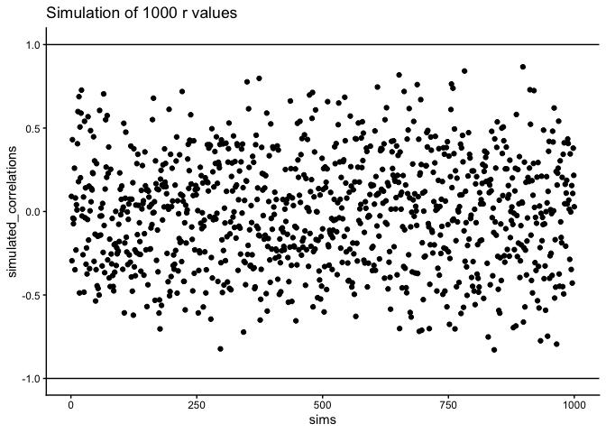
Figure 3.10 shows the outcome. Each dot is one simulated correlation. All of them fall between –1 and 1, but the values scatter widely: sometimes strongly positive, sometimes strongly negative, often near zero. The point is that chance alone can generate correlations of any size. Finding a correlation in your data does not by itself guarantee a meaningful relationship.
To visualize this process more concretely, we can animate a single run. In Figure 3.11, each frame shows two sets of 10 random values plotted against each other, along with the fitted regression line. Because the data are random, we expect no consistent pattern. Yet across repetitions, the line sometimes slopes upward, sometimes downward, and occasionally appears flat. This is what spurious correlation looks like.
The animation makes clear how quickly random samples can mimic each of these patterns.

You might find this unsettling: if two random variables with no relationship can still produce correlations, how can we trust any correlation at all? This raises a key question: how do we know whether the correlation we observed is meaningful or just chance? One way forward is to look not at a single outcome, but at the distribution of outcomes produced by chance. By simulating 1,000 random correlations and plotting them in a histogram, we can see which values occur frequently and which are rare.
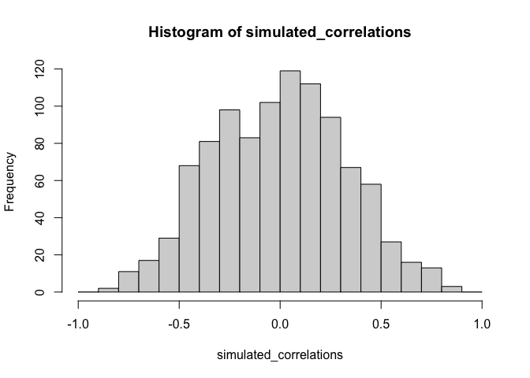
Figure 3.12 shows that most chance correlations cluster near zero. Moderate correlations (around \(\pm 0.5\)) occur less frequently, and near-perfect correlations (\(\pm 0.95\)) are almost absent. This distribution defines a “window of chance.” When we compute a correlation in real data, we can ask: is our observed \(r\) consistent with what chance alone could plausibly generate?
or example, if you observed \(r=0.1\), the histogram shows that such values are common in random data, so chance could easily explain it. An observed \(r=0.5\) is less common but still possible by chance. An observed \(r=0.95\), however, falls outside what chance typically produces, suggesting that something more systematic is driving the relationship.
3.4.2 Sample size and stability
So far, our lottery game has used 10 draws per participant. With such small samples, chance produces a wide range of correlations: sometimes strongly positive, sometimes strongly negative. But what happens if we increase the sample size?
We can repeat the simulation under four conditions: each participant draws 10, 50, 100, or 1000 numbers. In each case, we run 1000 simulations and record the correlation values.
Figure 3.13 shows the resulting four histograms of Pearson \(r\) values.
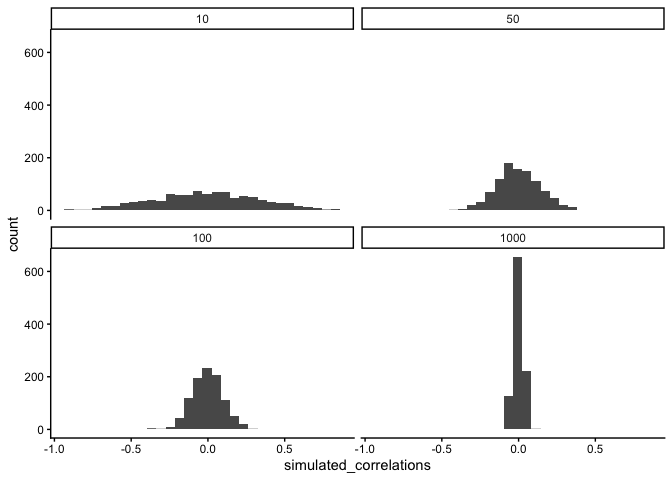
The pattern is clear:
- With n=10, correlations spread widely across the range –1 to 1. Chance alone frequently produces values that would look “strong” in real data.
- With n=50 or 100, the spread narrows, but moderate correlations still appear.
- With n=1000, almost all simulated correlations fall close to zero.
The takeaway is that larger samples reduce the influence of chance. Small samples are highly unstable, making it difficult to distinguish signal from noise. As sample size increases, the distribution of chance correlations collapses toward zero, so observing a large \(r\) becomes far less likely under randomness alone.
This illustrates why researchers place so much emphasis on collecting sufficient data. With too few observations, even strong-looking correlations may be spurious. With larger samples, a correlation of the same size is much harder to attribute to chance, and therefore more likely to reflect a real underlying relationship.
Note
Experimental design tip: sample size. Bigger n narrows the “window of chance.” If you expect a modest linear effect (e.g., |r| ≈ 0.2–0.3), plan for larger samples so random swings are less likely to mimic or mask the effect.
3.4.2.1 Visualizing the effect of sample size
Animations make it easier to see how sample size influences the stability of correlation estimates. When the sample is very small, chance variation can create apparent patterns in any direction. As the sample size increases, those chance fluctuations diminish.
When there is no true correlation
In Figure 3.14, each panel shows two random variables sampled with no real relationship. The panels differ only in sample size: 10, 50, 100, or 1000 observations. Each frame of the animation re-samples the data, plots them, and fits a line.
With \(n=10\), the line swings dramatically from positive to negative slopes. At \(n=50\) and \(n=100\), the line still shifts but is more restrained. At \(n=1000\), the line is consistently flat, as expected when no correlation exists.

Which line should you trust? The line from the sample with 1000 observations is the most reliable. It stays nearly flat across repetitions, as we would expect when no true correlation exists. The line from a sample of only 10 observations swings wildly, sometimes positive, sometimes negative. The lesson is straightforward: claims about correlation are only as trustworthy as the sample size behind them. Small samples can produce misleading patterns by chance, while large samples rarely do.
We can also repeat this simulation with data drawn from a normal distribution rather than a uniform one. The result is the same: small samples fluctuate dramatically, but with large samples the estimated correlation stays close to zero. Figure 3.15 illustrates this.
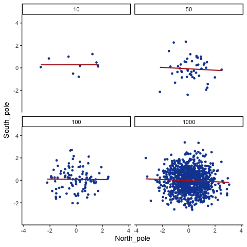
What do things look like when there actually is a correlation between variables?
When there is a true correlation
In Figure 3.16, the simulation is repeated with a real positive correlation built into the data. Again, we vary the sample size from 10 to 1000.
With \(n=10\), the regression line jumps around and occasionally even points downward, despite the underlying positive relationship. As the sample size grows, the line becomes more stable and consistently reflects the true positive slope. Sampling error still introduces some noise, but with larger samples the real correlation is much easier to detect.

Both the histograms and the animations show that small samples make correlations unreliable, while larger samples are more likely to reveal the true pattern. Even when a real positive correlation exists, a small sample might miss it, or even suggest the opposite, simply due to chance. Because we usually only have one sample, we can never know for certain whether we were “lucky” or “unlucky.” The best protection is to collect more data: larger samples reduce the influence of chance and make genuine relationships easier to detect.
3.4.3 Nonlinearity: when r misses real relationships
Consider, a snake plant. Like most plants, snake plants need water to stay alive. But, they also need the right amount of water. Imagine we grow 1000 snake plants, each receiving a different amount of water per day. The amount of water ranges from no water to extreme overwatering (say 1000 teaspoons of water per day). We then measure weekly snake plant growth. Water is clearly causally related to plant growth, so we expect to see a correlation.
What would the scatter plot look like?
Plants given no water at all will eventually die, showing little or no weekly growth. With only a few teaspoons per day, plants may survive but grow only modestly. In a scatter plot, those cases would appear near the bottom left (low water, low growth) and rise upward as water increases. Growth continues to improve until a threshold is reached—beyond that point, excess water harms the plants. Severely overwatered plants also fail to grow and eventually die, just as those given no water do.
The scatter plot would form an inverted U or V: as water increases, growth rises to a peak and then declines with overwatering. A relationship like this can produce a Pearson’s \(r\) close to zero, even though water clearly affects growth. Figure 3.17 illustrates this pattern.
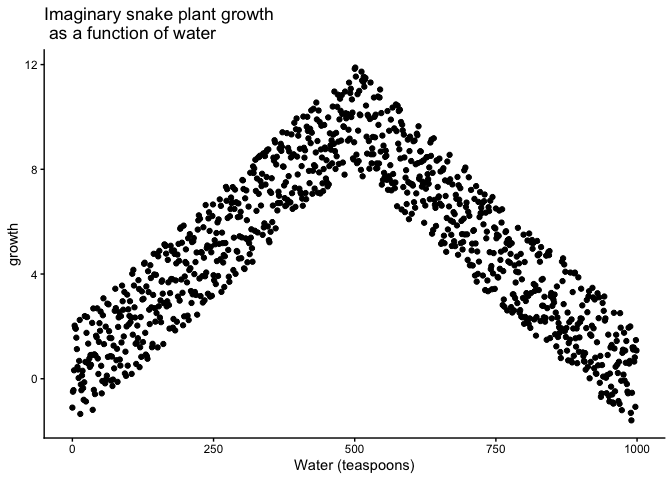
There is clearly a relationship between watering and snake plant growth. But, the correlation isn’t in one direction. As a result, when we compute the correlation in terms of Pearson’s r, we get a value very close to zero, suggesting no relationship.
#> [1] -0.02108469What this really means is there is no relationship that can be described by a single straight line. When we need lines or curves going in more than one direction, we have a nonlinear relationship.
This example shows why correlations can be tricky to interpret. Water is clearly necessary for plant growth, yet the overall correlation can be misleading. The first half of the data suggests a positive relationship, the second half a negative one, and the full dataset little or none. Even with a real causal link, a single correlation coefficient may fail to capture it.
Pro Tip: This is one reason why plotting your data is so important. If you see an upside U shape pattern, then a correlation analysis is probably not the best analysis for your data.
3.4.4 Confounding variables (third-variable problem)
Correlations can arise because of a third variable—something not directly measured that influences both variables of interest. Returning to the snake plant example: imagine we measure water and plant growth, but ignore sunlight. If plants in sunnier windows both receive more water and grow faster, we might attribute the effect to water alone, when in fact sunlight is doing much of the work.
The same issue appears in human data. Suppose we find that income and happiness are positively correlated. Is money itself the cause? Possibly, but other factors – such as housing quality, healthcare access, or social opportunities – may be the true drivers. Income is correlated with these factors, which in turn influence happiness.
3.5 Summary
Why it matters. Correlation is how we quantify whether two variables move together. It’s essential for describing patterns (e.g., temperature and canopy cover, chocolate and happiness) and for deciding whether a relationship is worth modeling or acting on.
Core ideas
- Scatter first, always. A scatter plot shows direction (up, down, none), form (straight vs curved), and outliers.
- Covariance → correlation. Covariance measures whether deviations from each mean tend to align. Pearson’s r rescales covariance by the standard deviations so the result is unitless and bounded ([-1, 1]).
- Interpreting r. Sign indicates direction; magnitude indicates strength of a linear relationship. r near 0 can still hide a strong nonlinear pattern.
- Regression link. The best-fit line summarizes the average relationship; residuals are the vertical gaps between data and the line. The line is chosen to minimize the sum of squared residuals.
Common pitfalls
- Chance (spurious) correlations. Small samples can produce large |r| by accident. Larger samples shrink the “chance window” toward 0.
- Nonlinearity. Curved relationships (e.g., too little or too much water harming plant growth) can yield r ≈ 0 despite a real effect.
- Confounding. A third variable can create or inflate a correlation (e.g., sunlight affecting both watering patterns and plant growth).
Practice checklist
- Plot the scatter; look for linearness, curvature, and outliers.
- Report r with sample size (n) and, when possible, a confidence interval.
- Avoid causal language—say “associated with,” not “caused by.”
- If the pattern is curved, don’t stop at r; fit a suitable model (e.g., add a quadratic term) or transform.
- If results hinge on a small sample, say so and treat conclusions as tentative.
Takeaway. Correlation is a precise way to summarize linear association, but it’s only as trustworthy as your plot, your sample size, and your awareness of curvature and confounding. Plot first, quantify carefully, and interpret cautiously.